开心果 Need Car · 2022-10-23T14:19:00+08:00 · 微信原文
汽车嵌入式开发中，CAN总线是使用最广泛的一种通信总线。通过CAN总线，不同节点之间，时时交互信息。这些信息中，携带着车辆各个功能所需要的信号（Signal）。这里不禁问一个问题：“发送端发送的信号，接收端是如何从总线上获取的呢？或者说如何准确获取呢？”
在回答这个问题之前，先了解一下信号的收/发过程。比如：节点A发送一个车速信号（Veh_Speed，uint8类型）给节点B，Veh_Speed = 100Km/h = 0x64 Km/h。对于节点A和节点B来说，两者只能识别数字信号，而CAN总线无法传输数字信号，那A节点如何将数字信号（Veh_Speed）传递给节点B呢？答：数/模转换。就是节点A的数字信号通过数/模转换芯片（Transceiver）转换成CAN总线可以传输的电压信号。节点B在通过同样的数/模转换芯片将接收到的电压信号转换成数字信号。
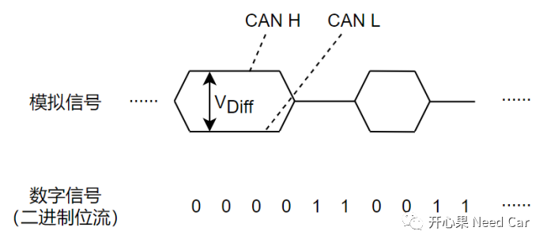
Step3：节点B的Receiver将接收到的VDiff进行解码，之后通过节点B的Rx Pin，将Veh_Speed信号传递给节点B。Veh_Speed信号的传输，如下所示：
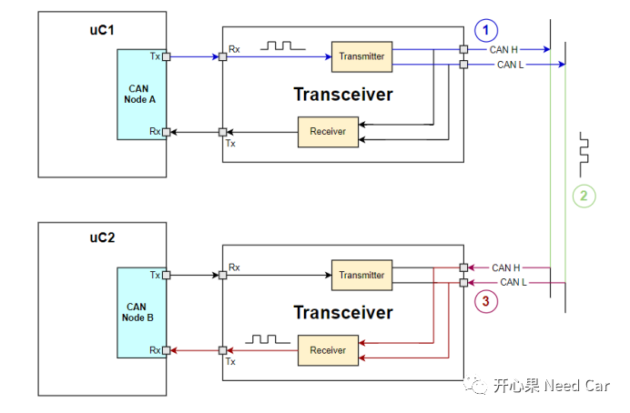
既然节点B的Receiver可以将VDiff解码成对应的数字信号，依据是什么呢？答：采样点（SP：Sample Point）。通信节点之间使用相同的通信速率，因此每一个Bit传输的时间固定，比如：500Kbps，则传输一个Bit用时2us（tBit），在tBit的某个点去采样，以此点采集的值表示数字信号1或者0，如下所示：
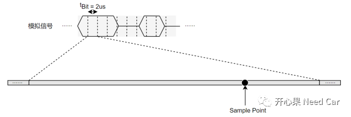
这个采集信号值的点就是采样点（Sample Point）。
CAN H或者CAN L引脚的拉高、拉低取决于对应电容充/放电速度，因此，CAN H或者CAN L的电压改变时，有一个斜率，如下所示：
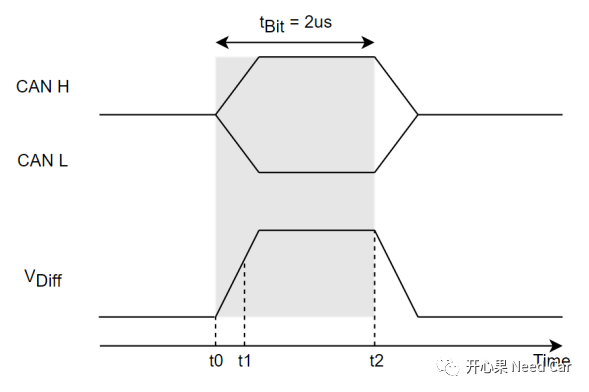
假设t0~t2是一个tBit时间，如果在t0~t1时刻采样，可能会因为CAN H和CAN L上的电压不稳定，VDiff没有达到阈值，导致采样值错误。因此，需要选择CAN H和CAN L电压稳定的阶段采样，以此确保采集的值与实际发送值匹配。
由上图可以看出，在t1~t2时间内，采集到的数据相对比较准确。为了确保数据的精确性，需要选择一个最合理的点采样。所以，设计采样点的主要目的是确保采样值的可靠性。
进一步了解采样点的重要性，看一下不同采样点，实际发送和采集的Logic值结果，如下所示：
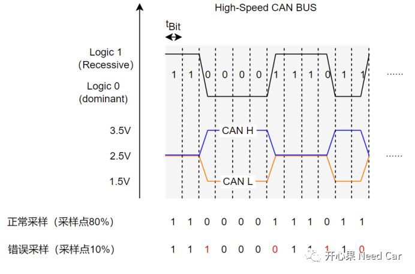
当采样点为80%时，实际要发送的Logic值和采集到的Logic值匹配；
当采样点设置为10%时，实际要发送的Logic值和采集到的Logic值不匹配。由上图可以看出，当发送的Logic值变化时，采样过快，会因电压未达到稳定而采样到与实际发送不符的值。
为了精确采样，11898规范中将一个Bit划分成4个段：同步段（SS:Synchronization Segment）、传播段（PS:Propagation Segment）、相位缓冲段1（PBS1:Phase Buffer Segment1）、相位缓冲段2（PBS2:Phase Buffer Segment2），如下所示：
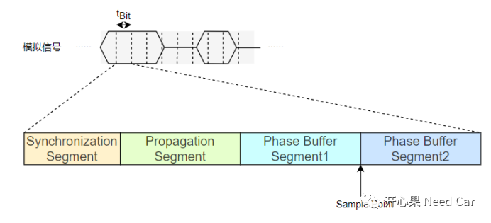
规范要求采样点在相位缓冲段1和相位缓冲段2之间。
同步段：同步CAN总线上连接的节点；
传播段：吸收信号在物理线路上的延时，信号从发送端到接收端，Transceiver和双绞线会产生一定的延时；
相位缓冲段1、相位缓冲段2：补偿CAN总线上连接节点的晶振偏差。
工程中，需求会要求“75%、80%采样点”又是怎么回事呢？实质就是约定一个采样时刻，确保网段内所有CAN节点在近乎相等的时刻采样。假设：要求设置采样点为80%，通信速率500Kbps，则tBit= 2us，则采样时间点 = 2 * 0.8 us = 1.6us。tBit与Sample Point关系如下所示：
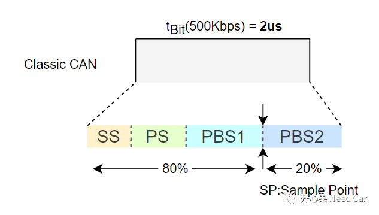
上述的tBit=2us如何保证的呢？答：约束相同网段内节点的通信速率，即：相同网段内的节点使用相同的通信速率，比如：500kbps。当接收节点收到帧起始位（SOF：Start Of Frame，一个显性位)时，开始每隔2us采样一次，采样的时机在1.6us时刻（假设要求采样点80%）。
工程开发中，CAN总线的需求中，一般都会明确SJW（Synchronization Jump Width）的约束，比如：
1、Classic CAN的SJW需求
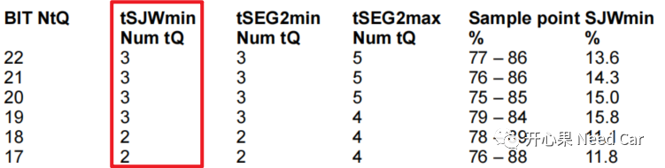
2、CAN FD的SJW需求
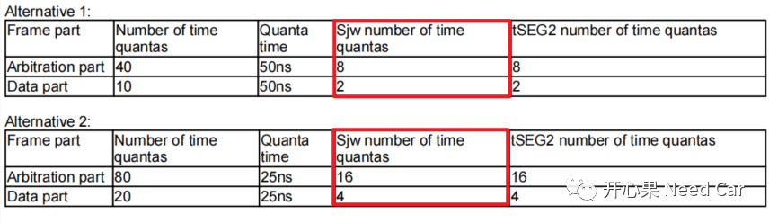
在SOF位置，总线上所有节点准备竞争总线的使用权，即：所有节点都检测到了起始的显性位（"0"），此刻，总线上所有节点可以公平竞争，这就是"硬同步"。
二、重同步
一帧CAN报文，由很多个Bit位构成，硬同步使得节点在帧起始的位置完成时序的对齐，但是，随着一个一个Bit在CAN总线上的串行传输，每个Bit的宽度稳定性（时序）无法保证，此时，就需要重同步来确保Bit的传输时序。什么是重同步呢？答：当CAN总线上出现相位差时，通过延长PBS1或者缩短PBS2来弥补采样误差，这就是重同步。
(1)PBS1延长SJW，实现重同步
当总线上的Bit流由隐性位（"1"）变为显性位（"0"）时，如果下降沿落在了SS之后，采样点之前，接收节点会延长PBS1长度，以此弥补发送节点滞后导致的偏差。PBS1延长的宽度等于SJW，如下所示：
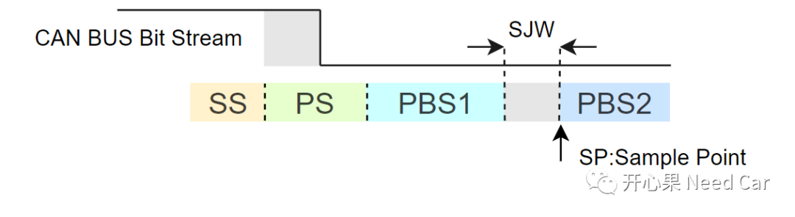
当总线上的Bit流由隐性位（"1"）变为显性位（"0"）时，如果下降沿落在了采样点之后，SS之前，接收节点会缩短PBS2长度，以此弥补发送节点提前导致的偏差。PBS2缩短的宽度等于SJW，如下所示：
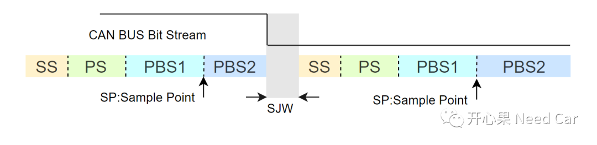
为什么会有相位差呢？或者说，为什么总线上的下降沿会提前或者滞后呢？答：总线上的节点，虽然处于同一个局域网内，但是，每个节点的晶振精度未必相同，节点晶振之间可能存在偏差，因此，晶振主导的时钟频率就可能存在相位差，即：不同的节点，虽然设置了相同的通信速率，也可能存在tBit长度不同的可能，因此，发送节点在发送Bit流的时候，接收节点可能识别到下降沿的滞后或者提前。此时，就需要重同步弥补此偏差。
晶振偏差导致的相位差，如下所示：
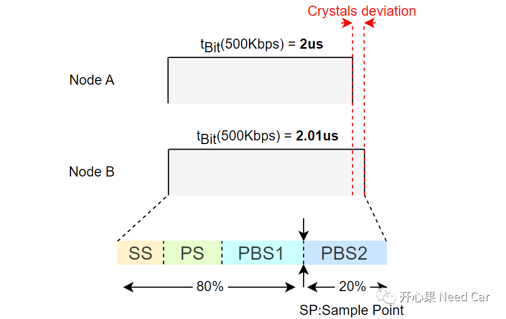
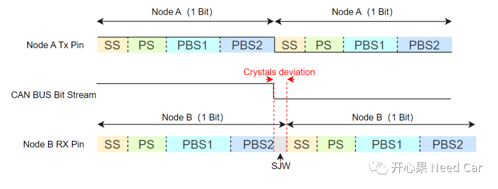
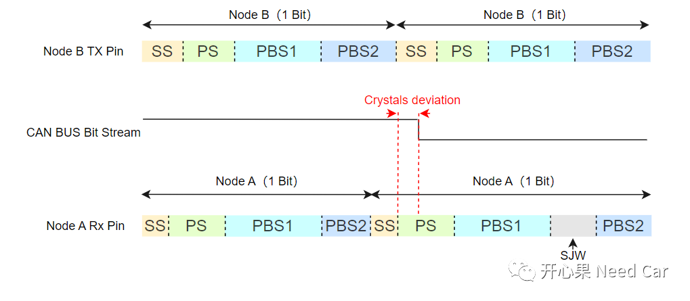
PBS1延长多少，PBS2缩短多少，由SJW值决定。eg：SJW = 3，则PBS1可以延长3个Tq，或者PBS2缩短3个Tq。
所以，SJW不参与采样点的计算，它只是重同步时，延长PBS1或者缩短PBS2长度的最大值。
往期精彩回顾